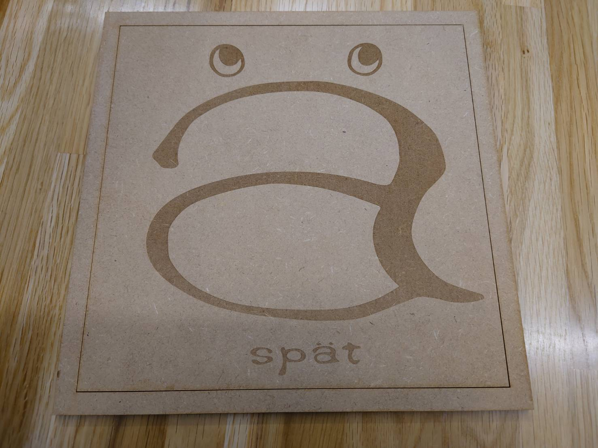

店の看板
私が今回レーザーカッターで作成したのはこちらです。

最初にこの課題を聞いたときにこのロゴを用いた作品を作ろうと思いました。
このロゴは友人のお店のロゴであり、このロゴを使った作品をレーザーカッターで看板を作りたいと思い作成しました。
そのため、スケッチブックでデザインを考える時間を省くことは出来たが、このロゴを使った作品でどのようなものを作るかに時間を要しました。
dxfファイル
dxfファイル
dxfファイル
これらのdxfファイルのデータを使って作品を平面で作ったものを組み合わせて立体的にしました。
このようにすることで、看板として使った時の強度の面での向上と見た目の看板ぽさを出しました。